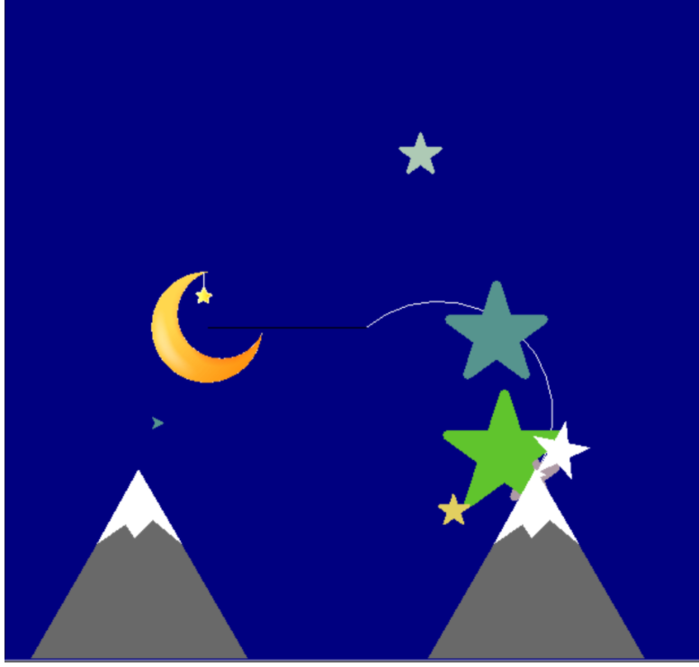
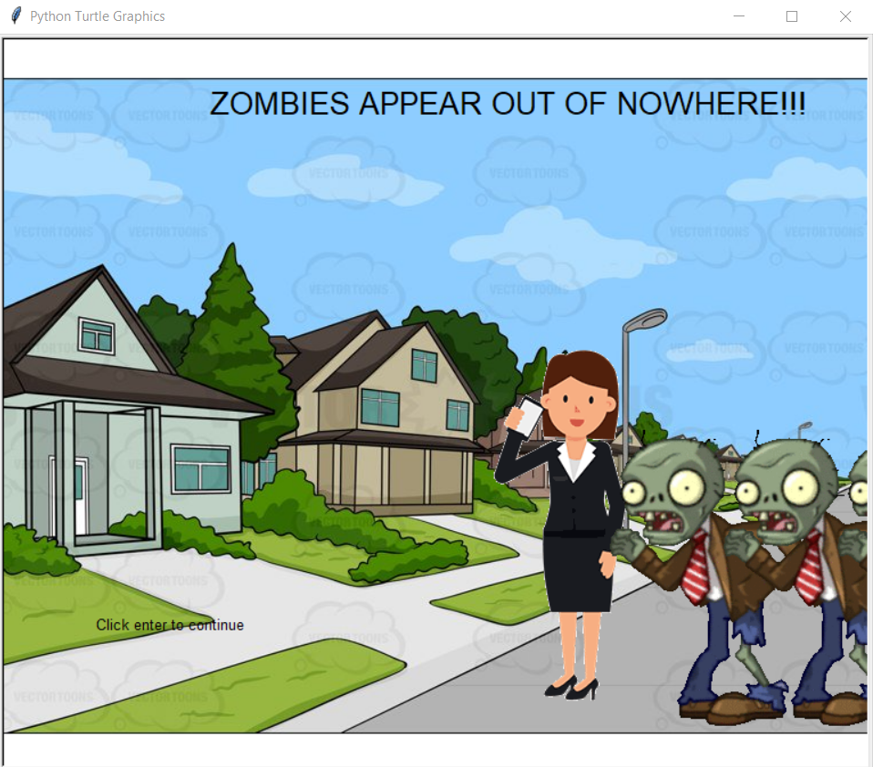
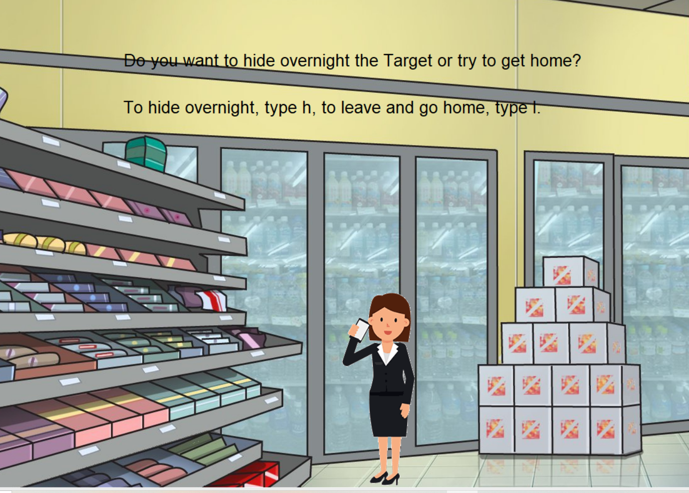

Home
Portfolio
About Me
This is my Portfolio Page!
1.1.9 Project

We created a night sky using Python. Our code is programmed to ask the user how many stars they want and then draws that many stars while randomizing the size and color of them. Using turtle we made a navy blue background, a shooting star, and two mountains. We also inserted a picture of the moon. The user is able to move the moon using the arrows on their keyboard.
1.2.5 Project
.png)
.png)
For our game, we coded Tetris using Pygame in Python. In our game, the user is able to use their right and left keys to move the blocks right and left. The blocks also rotate when the user presses the up key. Each time the user fills a row with blocks, the row clears and the score goes up by 1 point. When a block hits the top edge of the grid, the game stops and the message, "Game Over. Press Esc" appears. My job in this project was to code the actual blocks and randomize the color of each block. I also made them fall down.
1.3.1 Project
 
Our project is an interactive story that simulates a zombie apocalypse. In our game, the user is able to make different choices depending on each situation and if they make all the right choices, they will win. If not, they will lose and the story will end. I was in charge of coding the scene in the target up to the ending of the game. If the user decides to leave the Target, they are attacked by zombies and the game ends. However, if they choose to hide in the Target, they survive the night and win. I coded everything in this particular section.